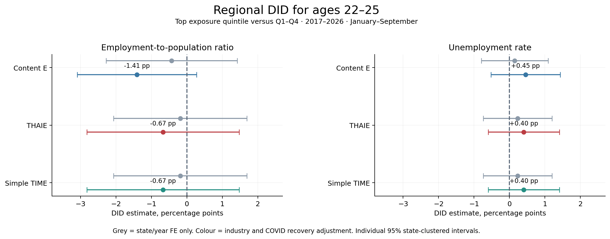
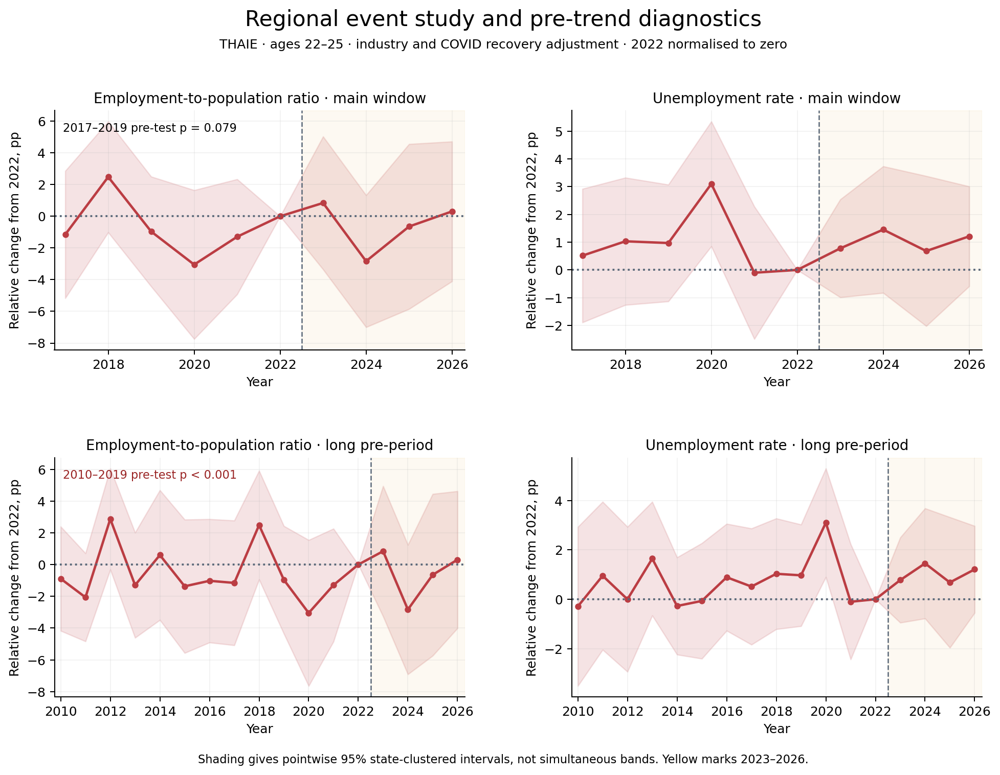
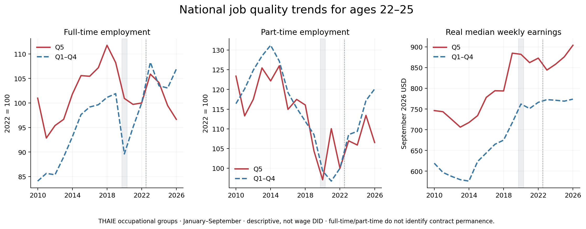

Building a comparable labour-market panel
The study starts with the Census Bureau’s Basic Monthly Current Population Survey. A regional analysis needs the unemployed and people outside the labour force as well as employed workers. State identifiers, labour-force status and population denominators are retained before occupations are linked to exposure scores.
The analytical panel contains 153 months, January–September of every year from 2010 through 2026. Using the same months avoids comparing a partial 2026 with full earlier years. The annual graphs therefore show comparable nine-month observations, not full-calendar-year estimates. Rates are not seasonally adjusted.
- Read each survey with its official layout. Fixed-width files are parsed with year-specific dictionaries, including the May 2012 layout change and the earlier age-variable name. The population is civilian household members aged 16 and over with valid labour-force status and positive survey weights.
- Harmonise occupational classifications. CPS 2010 uses the 2002 Census classification. Official conversion rates connect it to 2010 codes and then to 2018 codes. The 2011–2019 data use the 2010-to-2018 bridge; 2020 onwards are linked in the 2018 classification. National conversion probabilities are applied where one-to-one matches are unavailable.
- Freeze the baseline composition. Regional exposure uses 2019 occupational employment shares. Occupational quintiles use 2019 national employment weights across all ages. Scores and group membership are held fixed when outcomes change.
- Aggregate outcomes and check identities. For each state, age group and year, population equals employment plus unemployment plus non-participation; full-time plus part-time employment equals total employment. National rates divide summed weighted numerators by summed denominators, rather than averaging state rates.
| Component | Coverage or definition |
|---|---|
| Geography | United States, 50 states and the District of Columbia |
| Age groups | Six non-overlapping bands from 16–24 to 65 and over, plus 22–25, 16–29, 22–27 with a bachelor’s degree or higher, 30–54, and all adults aged 16 and over |
| Exposure inputs | 19,265 task IDs, 923 detailed O*NET occupations, 798 six-digit SOC occupations, and 547 Census occupations with complete common scores |
| Employment and unemployment | Employment / population and unemployment / labour force, using CPS composite weights |
| Earnings | Outgoing-rotation-group wage and salary workers aged 22–25; weighted median weekly earnings, CPI-U adjusted to September 2026 dollars |
Classification and coverage qualifications
Probabilistic code conversion is an approximation, not an observed change in an individual’s occupation. One 2010 conversion group whose published probabilities summed to more than one was left unmatched rather than forced to sum to one. A PUMS aggregate occupation code was reconciled with the CPS code list. Unmatched occupations remain in the population aggregates and are recorded separately in occupational calculations.
Source files, months, dictionaries and SHA-256 hashes are listed in the CPS source manifest. The BLS historical-comparability guidance remains relevant even after harmonisation.
Three measures under the same conditions
All three indices use the same task inputs, predicted human durations, occupational hierarchy and matched occupations. Content exposure e is a shared BGE-M3 prediction of the Eloundou β-style task rating. It is not a direct observation of workplace automation.
| Measure | Task-level calculation | Interpretation |
|---|---|---|
| Content exposure E | e | AI relevance to task content, without duration adjustment |
| Time-Horizon AI Exposure, THAIE | e × p(d) | Content exposure discounted by a retained completion curve at predicted human duration d |
| Simple time weighting, TIME | e × min(1, h50 / d) | A transparent piecewise duration discount using the same horizon |
b = ln(4) / log₂(h₅₀ / h₈₀)The retained GPT-5 snapshot uses h₅₀ = 203.012577 minutes and h₈₀ = 38.312431 minutes. This is a transferred benchmark curve, not an estimated success probability for each CPS worker.
Task scores are averaged within detailed O*NET occupations, then within SOC groups and linked Census occupations. State scores weight occupational exposure by fixed 2019 employment shares. Occupational quintile cut-offs are employment-weighted; regional quintiles divide the 51 state/DC scores into roughly equal numbers of regions.
See the THAIE method page for the wider measurement programme. The curve is deliberately frozen here to keep the US comparisons like-for-like.
Explore the national and state trends
Choose an age group, exposure index and view. The highest-exposure quintile is Q5. Each selection draws only the charts currently in view; data for an individual state are loaded when selected.
Loading the matched annual data.
Employment-to-population ratio
Unemployment rate
Real median weekly earnings
Show values for the selected charts
Re-examining the original −10.48% gap
The starting result compared employment growth in the highest THAIE occupational quintile with growth in Q1–Q4 among 22–25-year-olds between 2022 and 2026. Q5 employment fell by 1.65%, while Q1–Q4 employment rose by 9.86%. Their relative growth ratio gives a −10.48% gap. This is a relative employment-count comparison, not a 10.48-point fall in the employment rate.
| Adjustment | Content E | THAIE | Simple TIME |
|---|---|---|---|
| National common-sample comparison | −9.25% | −10.52% | −11.28% |
| State × industry comparison | −6.09% | −7.17% | −8.35% |
| Additional COVID recovery adjustment | −6.94% | −8.32% | −9.55% |
| Subtract the 2015–2019 pre-trend | −12.10% | −5.94% | −8.82% |
The common-sample −10.52% differs slightly from the original −10.48% because the model requires common state–industry support. With industry and COVID adjustment, THAIE’s 95% interval is −16.51% to +0.68%. After subtracting the pre-trend it is −17.53% to +7.30%. Negative point estimates remain, but the evidence does not establish a precise, robust gap or THAIE’s superiority over the alternatives.
Difference-in-differences around public generative AI
ChatGPT’s public release on 30 November 2022 defines a common event. The annual matched-month data put 2022 before the event and 2023–2026 after it. This marks public availability, not the invention of generative AI or simultaneous adoption by every firm.
The regional DID compares Q5 with Q1–Q4 using state and year fixed effects. Weights are fixed at each age group’s 2019 population, or 2019 labour force for unemployment. The adjusted model adds 2019 industry shares interacted with year, adult COVID employment losses and recovery gaps interacted with year, and separate Q5 departures in 2020 and 2021. The pandemic departures mean those two years do not identify the pooled pre-event contrast.
| Measure | Employment rate, pp | Unemployment rate, pp |
|---|---|---|
| Content E | −1.41 [−3.09, +0.28] | +0.45 [−0.53, +1.43] |
| THAIE | −0.67 [−2.82, +1.47] | +0.40 [−0.60, +1.40] |
| Simple TIME | −0.67 [−2.82, +1.47] | +0.40 [−0.60, +1.40] |
All intervals include zero. None of the twelve primary comparisons, three measures by two outcomes by two model specifications, survives Holm adjustment. Comparing the 22–25 and 30–54 age groups directly also gives an imprecise age-gap DID, so differences in individual age-group p-values should not be read as evidence of a youth-specific effect.

Pre-trends limit causal interpretation
With 2022 normalised to zero, the adjusted THAIE test of the 2017–2019 employment pre-coefficients gives p = 0.079. Extending the pre-period to 2010–2019 rejects their joint equality to zero at p < 0.001. A longer history exposes instability that a short before-and-after comparison can miss. Failure to reject a short-window pre-test would not prove parallel trends either.

The occupational contrast is more negative, but sensitive
A supplementary model compares Q5 and Q1–Q4 employment within state–industry–year cells. Its DID is the change in the average log employment ratio from 2017–2019 and 2022 to 2023–2026, converted back into a percentage. This is a multi-period contrast from unrestricted annual group differences, rather than an assumption that the post-event effect is identical every year.
| Measure | Relative employment change | Individual 95% interval |
|---|---|---|
| Content E | +0.19% | −4.49% to +5.11% |
| THAIE | −7.49% | −11.54% to −3.25% |
| Simple TIME | −6.86% | −11.09% to −2.42% |
THAIE’s negative contrast survives adjustment within the eighteen supplementary occupational comparisons. However, its 2017–2019 pre-coefficients also reject at p = 0.024. After this diagnostic, two additional sensitivities were calculated and labelled as post-result checks. Using 2022 alone as the baseline gives −2.63% [−8.11%, +3.17%]. Subtracting the 2017–2019 slope gives +0.48% [−18.88%, +24.46%]. These checks reveal dependence on the pre-period; they do not repair identification automatically.

Inference, sensitivity checks and age comparisons
Intervals use state-clustered CR1 covariance estimates and t critical values with 50 degrees of freedom in the 51-region sample. They are not full CPS survey-design intervals. Primary robustness checks include the long 2010–2026 window, omitting 2020–2021, Q5 against Q1 alone, omitting DC, equal state weights, continuous one-standard-deviation exposure, a 2022-only baseline and a 2017 placebo. The adjusted THAIE regional estimates remain imprecise. Q5-versus-Q1 estimates have particularly wide intervals.
The eleven age/education groups are exploratory comparisons. The direct THAIE young-adult age-gap estimate is +0.15 pp [−2.06, +2.36] for employment and +0.15 pp [−0.84, +1.14] for unemployment. Adults are not assumed to be unaffected by AI.
View the age-group comparison · Regional sensitivity estimates · Direct age-gap contrasts

Employment quantity and job quality
Nationally, THAIE Q5 workers aged 22–25 experienced a 3.34% fall in full-time employment and a 6.53% increase in part-time employment from 2022 to 2026. Their full-time share fell from 82.94% to 81.52%, while the share in part-time work for economic reasons rose from 2.26% to 4.04%.
Real median weekly earnings rose from about $873 to $904, or 3.55%, in September 2026 dollars. This describes wage and salary workers who remain observed in employment. Selection and changes in worker composition can affect the median, so a rising median is not evidence that every worker’s pay improved.

The regional THAIE DID for full-time employment divided by population is −1.81 pp [−4.35, +0.72]; the part-time counterpart is +1.14 pp [−1.12, +3.39]. These sum to the total employment-rate estimate. Occupational full-time employment gives a more negative supplementary contrast, but the occupational pre-trend qualifications still apply.
Data, code and audit trail
The public release contains aggregate results, the data behind the explorer, an English figure collection and an aggregate-data DID reproduction package. No individual CPS records, private local paths, embeddings or submitted manuscript are distributed here.
Read and inspect
The reproduction package starts from the saved state and state–industry aggregates. It reproduces the primary DID and supplementary occupational contrasts without re-fitting the upstream task predictors or redistributing source microdata. Independent statsmodels implementations matched the regional coefficients and cluster covariances to numerical precision. A separate Binomial GLM also checked the occupational count model on an eight-state subset.
What the evidence can support
These results describe relative labour-market changes across exposure groups. The comparison group may also be affected by AI. Actual firm adoption and worker-level automation are not observed, and the fixed retrospective exposure score is not randomly assigned.
Industry composition and COVID recovery controls leave room for occupation-specific demand changes, interest rates, hiring adjustments, migration and demographic composition. Occupational code conversion adds measurement uncertainty. State averages can also dilute large differences between occupations within the same region.
The most defensible reading is that an occupational employment gap deserves further investigation, while its attribution to generative AI remains unresolved. The regional DID neither identifies a clear youth-specific loss nor rules out economically meaningful effects. Longer histories and transparent pre-trend diagnostics are part of the result.
Primary sources and methodological reference
- US Census Bureau, Basic Monthly CPS
- US Census Bureau, industry and occupation code lists and crosswalks
- Bureau of Labor Statistics, historical comparability of occupation and industry data
- Bureau of Labor Statistics, public data API, including CPI-U series CUUR0000SA0
- OpenAI, Introducing ChatGPT, 30 November 2022
- Roth (2022), Pretest with Caution, American Economic Review Insights